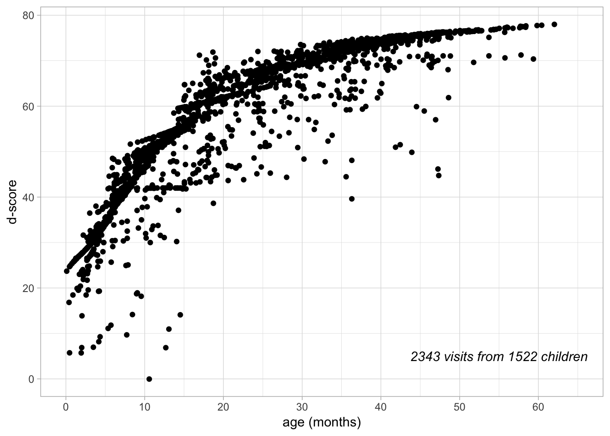
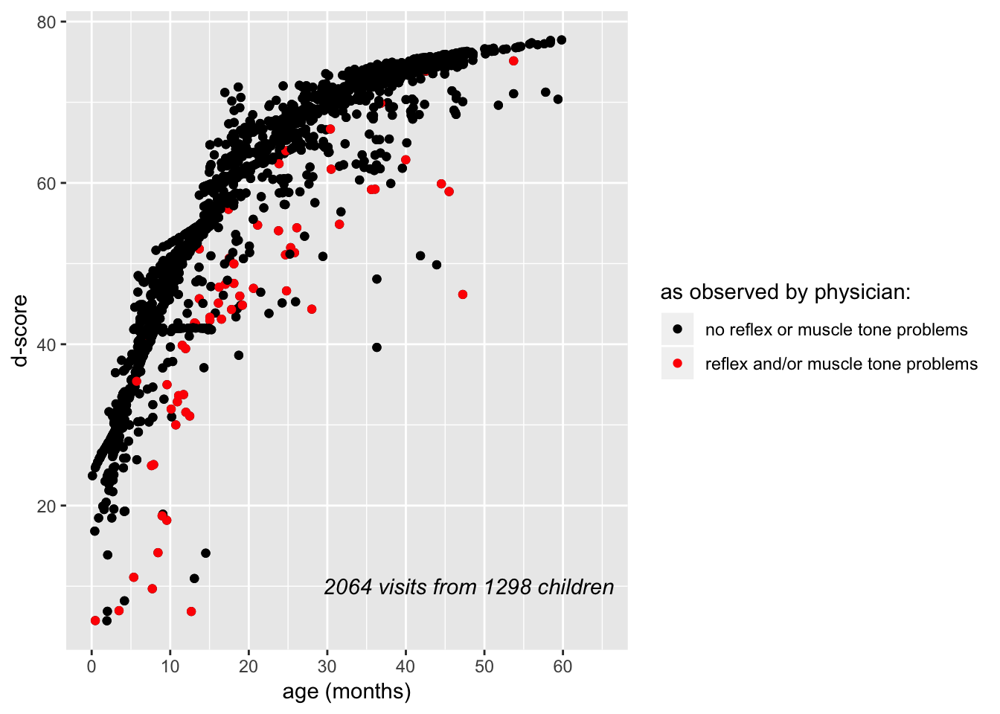
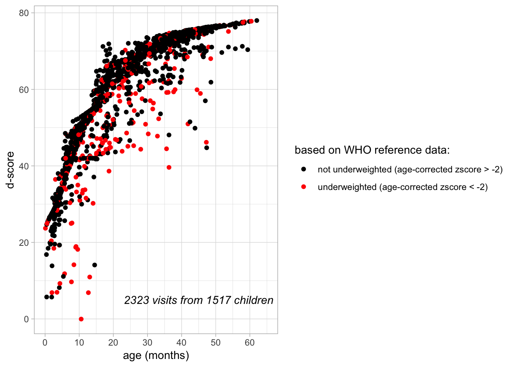
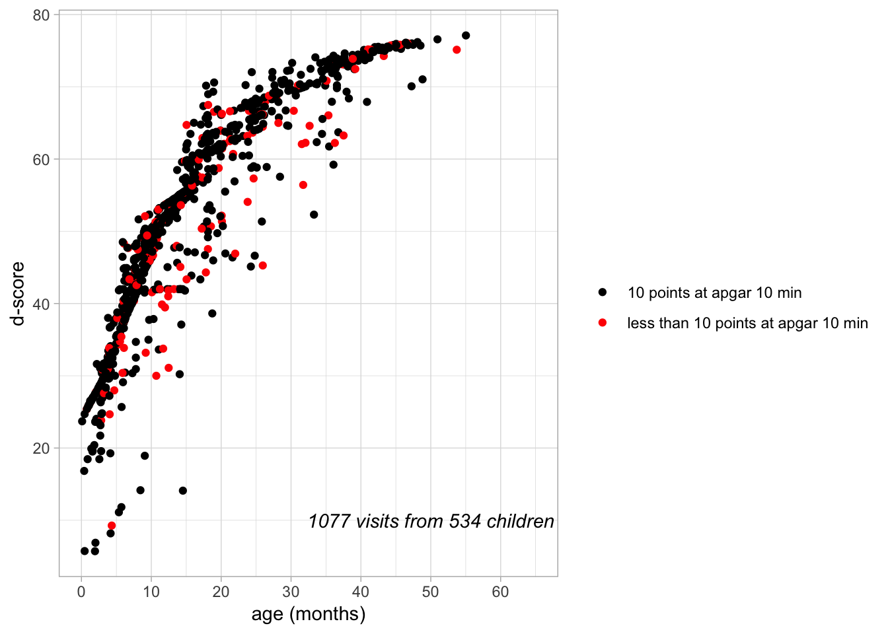

9.2 Usability and validity of the \(D\)-score in a low income country: The case of Togo
The \(D\)-score is intended as a universal measure of children’s development. There is ample research indicating that the \(D\)-score actually is a valid indicator of development in western European countries like the Netherlands. If the \(D\)-score is a universal measure it should be informative in low and middle income countries as well. However, little is known about the usability and validity of the \(D\)-score in such countries. The aim of the present study is to examine the usability and validity of the \(D\)-score in the western African country of Togo. Togo definitely qualifies as a low income country with a 2017 GNI per capita of $610 versus $46,180 in the Netherlands, and $744 for low income countries in general (data.worldbank.org).
To address this issue, we used data that were gathered by a French physician in Kpalimé, Togo. She set up a child health care system that was modeled after the Dutch preventive health care system. The system included the use of the Dutch Development Instrument (DDI; in Dutch: Van Wiechenschema) to assess whether children’s developmental progress is in the normal range. The DDI data were used to calculate the \(D\)-scores as well as the age-corrected z-score of the \(D\)-score relative to a Dutch sample (DAZ). These two indices are the dependent variables in the present study. Data were gathered from about 9747 individuals in the 0-18 age range, but for the present study we focus on data from children in the 0-4 age range because the DDI assessment system is meant for this age range.
Other available measures include father’s level of schooling, father’s number of children at the child’s first visit to the medical center, the APGAR score as a newborn, children’s weight, and the results of a physician’s neurological examination during visits to the health center. These variables are used to predict children’s \(D\)-scores and thereby to examine the \(D\)-score’s usability and validity in Togo.
Methods
Participants
Participants potentially included 1859 children in the 0-4 age range who paid at least one visit to the Kpalimé health center. Kpalimé is the fourth biggest town in Togo, but the health center also attracted parents and children from a wide surrounding rural area. Parents visited the health center for several reasons, including for a preventive health check or because of their child’s apparent health problems. The possibility of visiting the health center was made known to parents by information sessions for parents at primary schools. Parents paid a small amount of money per visiting child (about €4 for children of 4 years or older, and €0.80 for children younger than 4 years).
Because of limitations that are inherent to working in a low income country (limited access to the internet, computer failure) data of newly digitalized paper dossiers were sent to the Netherlands on a regular basis, but this practice unavoidably caused some unclarities and inconsistencies in the resulting dataset. Many of these could be solved, but time constraints prevented us from solving them all. Consequently, the data of .. potential participants (..%) were not yet included in the present study which leaves a dataset of 1659 (of 1644 NOG UITZOEKEN). Moreover \(D\)-scores could not be calculated when either age or DDI data were missing, which leaves a dataset of 2342 visits from 1522 children. The number of visits that parents of these children in the 0-4 age range paid to the health center varied from 1 – 9, but the majority of children were seen only once (n = 1146; 75.3%).
Measures
\(D\)-score
\(D\)-scores were calculated based on a French-language version of the DDI assessment. As in the Dutch preventive health care system, the goal of administering the DDI assessment was to distinguish children with developmental problems from normal children. This means that items were chosen such that 90% of the children is expected to pass on age-equivalent items. Generally, for children that did not pass items age-equivalent items, extra items meant for a lower age were assessed (with the exception that items meant for children younger than 15 months were never administered to children of age 15 months or older). Scores were strictly based on observations rather than on parent report. For the exact procedure to calculate \(D\)-scores based on DDI-scores, see chapter 5.
Medical assessment
At each visit a physician notated whether problems were observed regarding a wide range of health aspects including problems with reflexes and muscle tension. Also, weight was measured at each visit.
Background characteristics
At the first visit of each child, the accompanying adult (mostly the mother) was asked to report on general background characteristics, including profession of the parents and the number of children each of the parents has (due to polygamy this number may differ between parents). As a measure of socio-economic status (SES) we constructed a dichotomous variable ‘schooling of father’ based on the reported profession of the father. As the main physician and founder of the medical center is familiar with the local culture and schooling system, she indicated which of the thirteen most common professions were likely to be schooled professions (i.e. need more than primary education). Fathers with one of these professions were classified as ‘schooled’. When ‘another profession’ was marked, the father was categorized as unschooled.
Other background characteristics included gender of the child, number of children of the father at the moment of the first visit, and birth date. Age of the child at the moment of visiting was calculated based on the date of visit and the birth date. In Togo, medical information about a newborn is notated on a special card which parents receive. Parents were asked to take this card to the medical center; in this way information about the birth situation of part of the children was obtained, including APGAR scores at 1, 5 and 10 minutes after birth.
Procedure
Measures used in this study were assessed at the medical center in Kpalimé which parents visited with their children, and were part of a general preventive health assessment (including physical measurements of weight, height, and head size, a medical examination, a few blood tests, and a hearing test). Also, parents were asked to report on characteristics of the birth situation, previous health issues, nutrition situation, and background characteristics of the family.
During the visits, medical assessment took place before assessment of the DDI assessment, and was conducted by the same physician. All assessments, including the DDI assessment, were either performed by the initiating physician and founder of the medical center, or by one of three local physicians trained to assess the DDI procedure. Resulting data of the assessment (including advice given and/or references to another professional) were documented in paper dossiers and in 2017 digitalized by four local assistants via software program EpiData.
Analyses
To assess the validity of the \(D\)-score in this population, we inspected scatterplots in which \(D\)-scores are plotted against age for all available visits, and in which children with neurological problems as observed by a physician are highlighted. It was expected that a curve is seen, with higher \(D\)-scores for older children, moreover children with very low \(D\)-scores for their age were expected to be assessed by the physician as having a neurological problem. Validity and usability of the \(D\)-score in this population would also be supported when known risk factors of developmental problems would be found to be predictors of a lower \(D\)-score in this population as well. Risk factors of interest are health problems of a newborn (as indicated by a less than optimal APGAR score at 10 minutes), and being underweighted. Furthermore, if a relation between underweight and a lower \(D\)-score is observed, it would also be interesting to see whether there is a relation between family size and \(D\)-score, as many children per family could be a cause of malnutrition. For this purpose children were classified as being part of a large family when the number of children of their father was 5 or more (at the moment of their first visit) versus 4 or less.
To assess which risk factors predict a lower than normal \(D\)-score, several regression analyses were conducted. Outcome variable is the Development - Age adjusted Z-score (DAZ) which tells how many standard deviations the \(D\)-score of the child deviates from his/her age mates. To calculate these z-scores, data of Dutch children are used as reference data. As this reference data is only available for children younger than age 2.78 years, only DAZ-scores could be calculated for age group 0 – 2.78, and therefore all regression analyses were performed for this subgroup.
For some of the risk factor variables data is only available for part of the children. In order to prevent a loss of power, for each risk factor separate regression analyses were conducted. In each regression sex and education level of father (schooled versus unschooled) were added as covariates (except for the regression where the relation between large families and the DAZ is analyzed, as family size and schooling may be confounded). As data from visits of the same children are not independent, regressions were performed on data with one visit per child only. All regression analyses were conducted twice: once with the data from the first visit of each child, and once with the last visit of each child.
Results
| N | mean | SD | median | |
|---|---|---|---|---|
| age (years) | 1567 | 2.30 | 1.10 | 2.20 |
| D-score | 1522 | 63.13 | 13.03 | 67.56 |
| DAZ | 965 | 0.39 | 1.94 | 0.83 |
| weight (kg) | 1564 | 11.02 | 2.93 | 11.00 |
| weight z-score (age-corrected, WHO-reference data) | 1556 | -1.00 | 1.27 | -0.90 |
| N | % | |
|---|---|---|
| gender (% boys) | 1565 | 52.8 |
| fathers’ schooling (% schooled) | 1512 | 37.7 |
| muscle tension and/or reflex problems (% with problems, as observed by physician) | 1309 | 3.5 |
| APGAR 10 min. (% with score <10) | 548 | 83.8 |
The relation between \(D\)-score and age can be found in figure .. As expected, a curve is seen, with higher ages related to higher \(D\)-scores. Also, it can be seen that several \(D\)-scores are below the curve, i.e. these children had lower \(D\)-scores than their age mates. In figure .. it can be seen that many of these lower than normal \(D\)-scores are not artefacts of the data, but belong to children that were observed to have reflex and/or muscle tension problems.


In figure .. underweighted children are highlighted. Visually there seems to be a relation between being underweighted and having a lower than normal \(D\)-score. A regression based on data of children’s last visit for which the DAZ-score could be calculated, showed that indeed the age-corrected weight z-score (waz), after correction for fathers’ schooling and sex of the child, did predict the DAZ: a decrease of 1 SD in age-corrected weight was related to a decrease of 0.6 SD in age-corrected \(D\)-score (p <0.001), which is a reasonable effect. The overall model explained 16% of the DAZ variance (adjusted R2). As in the other regression analyses sex and fathers’ schooling did not contribute significantly to the model. Because there clearly seems to be a relation between underweight and a lower than normal \(D\)-score, it was also tested whether family size (which might be a cause of malnutrition) did predict the DAZ. No such relation was found: children from large families (5 or more children of the father at the moment of the first visit versus 4 or less children) did not have different DAZ-scores at their last visit than children from smaller families (after correction for sex: B = 0.01, p = 0.98, adjusted R2 = -0.002).

In figure .. \(D\)-scores of the children for who a 10-minute APGAR score was available are shown. A less than optimal 10-minute APGAR score (i.e. less than 10 points) did predict a lower DAZ at their last visit after correction for sex and father’s schooling (B = -0.88, p <0.001, adjusted R2 = 0.027). So, children with a less than optimal APGAR score at ten minutes after birth, had somewhat lower \(D\)-scores.
For all regression analyses mentioned, results were similar when based on children’s first visit.

Discussion and conclusions
In this study we examined the validity and usability of the \(D\)-score in low income country Togo. The \(D\)-score does seem to be informative in this country. The \(D\)-score did increase with age, and for the majority of the children \(D\)-scores were very similar within their age group. It is notable that there were also several children with much lower \(D\)-scores when compared with their age mates. This does not seem to be an artifact of the data or of the measures, as the majority of these children were observed to have muscle tension and/or reflex problems. So, it is plausible that these children indeed had developmental problems. Furthermore, health factors that were expected to be related to having a lower \(D\)-score were found to be significant predictors: a less than optimal APGAR score 10 minutes after birth, and a lower than normal weight at the time of the assessment were related to a lower than normal \(D\)-score. Especially the relation between weight and \(D\)-score was quite strong, as the model with age-corrected weight, sex and father’s schooling explained 18% of the variance in age-corrected \(D\)-score. The positive relation between weight and \(D\)-score, as well as the fact that children were often underweighted in this population, seems to indicate that being underweighted is a risk factor for developmental problems. The main physician of the medical center noted that not many children with extreme underweight were seen, but our results do indicate that also less than severe underweight does have a negative impact on the development of children.
The idea that having many children in the family would be related to having a lower \(D\)-score (due to possible malnutrition), was not supported. This might mean that there is no clear relation between living in a large family and being underweighted, or that we did not have enough power to detect this, as there were not that many children from large families.
Neither sex nor father’s schooling did significantly contribute to variance in age-corrected \(D\)-scores. For sex at this young ages, this is consistent with results found in other studies (… refs…). Parents’ schooling has been found to be related to \(D\)-scores in other studies (… refs..); that it was not in the present study might have to do with the population, or with the current method where it was estimated whether the parent was schooled based on profession. Many fathers had a profession other than the thirteen most common professions and were estimated to have no schooling, which might not be correct for part of this group.
A limitation of the present study is that our sample might not be representative of children in a low income country, or even of children in Togo. Especially the fact that many children came to the medical center because they were ill might mean that they are not representative in terms of general development and other measures. However, the current goal was to examine the validity and usability of the \(D\)-score in a low income country, and the result that, even though many children were ill, the \(D\)-score is clearly related to neurological problems (as indicated by reflex, and/or muscle tension problems), age, APGAR score as a newborn and weight does show that the \(D\)-score ís informative in a low income country as well.